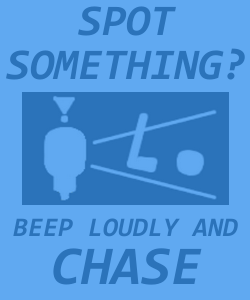
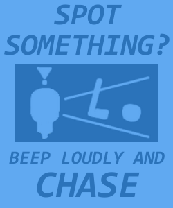

Parole in One
Produced as a semester-long project for INFO 3152: Introduction to Game Development. I worked as a designer on a team of 8 people, primarily focusing on sound design and level design, as well as creating a few animations and facilitating playtesting sessions.
About halfway through the semester, Cornell switched to fully remote classes. It was still the extremely early stages of the COVID-19 Pandemic, so our team was unfamiliar with remote work. We managed to keep our momentum going, and although the scope of our project had to be reduced, I'm proud of what we were all able to accomplish in such a short time under those conditions.
During this project, I worked briefly on some concept art:


Around the final week of the project, I got the chance to add some world-building touches (and subtle tutorials) to the environment with some decorative assets:


 


The animation work I did for this project was primarily for the ball and goal objects. We went through a few iterations of goal designs, ranging from a jagged, makeshift prison aesthetic to a more usable and constrasting design:


I also enjoyed making unlockable costumes for the player's ball, along with custom animations for reaching the end of a level: